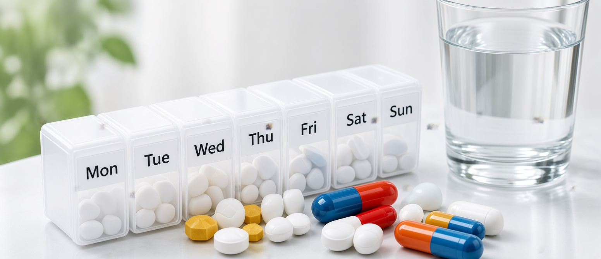

Small steps, big benefits.
Straight answers to the questions we hear most at the counter.

3D Chrono-Health & Medication Matrix
Circadian biological rhythms, arterial pressure benchmarks, and pill biomechanics. Explore how timing, meal synergy, posture, and hydration transform pharmaceutical efficacy.
Morning Inception (07:00 – 09:00)
Thyroid hormone (Levothyroxine) and morning blood pressure meds absorb with peak bioavailability on an empty stomach. Always wait 30–60 minutes before morning coffee or tea, which can bind to active ingredients and cut absorption by up to 50%.
Can I take antibiotics for a cold or flu?
No. Colds, influenza, and most acute throat infections are caused by viruses. Antibiotics have zero biological effect against viruses; they are designed exclusively to eliminate bacteria.
Taking antibiotics indiscriminately when you have a viral illness exposes you to gastrointestinal upset, allergic reactions, and most critically, contributes to antimicrobial resistance. This means bacteria adapt and learn to survive, rendering life-saving medications ineffective when you or your loved ones face a serious bacterial infection in the future.
Rest, adequate hydration, saline nasal rinses, and targeted symptom relief (such as fever reducers or decongestants) are the medically sound approach for common viral illnesses. Stop by our counter anytime to discuss what fits your symptoms.
How much water should I drink daily, especially with medications?
Daily hydration requirements vary widely based on your body weight, physical activity level, pregnancy or nursing status, and local weather conditions. In Addis Ababa's elevated climate, dry air and altitude can lead to rapid insensible fluid loss without you realizing it.
A reliable daily self-check is urine color: pale, straw-colored urine indicates optimal hydration. Dark amber urine signals that your kidneys require more fluids to efficiently flush metabolic byproducts.
When taking solid oral medications (tablets, capsules), always drink a full glass of water (approx. 200–250 mL) while sitting or standing upright. Swallowing pills dry or with just a tiny sip can cause them to lodge against the esophageal wall, causing severe localized irritation or ulceration.
I missed a dose of my prescription. What should I do?
The correct protocol depends entirely on the pharmacology of your specific medicine. The guidance for blood pressure medications, insulin, antibiotics, and hormonal therapies is markedly different.
The Universal Rule: Never double up doses. Taking two doses at once to "make up" for a missed tablet dramatically increases the concentration of the drug in your bloodstream and significantly elevates the risk of toxic side-effects.
As a general guideline: if you remember within a few hours of your scheduled time, take the missed dose immediately. However, if it is almost time for your next scheduled dose, skip the missed tablet completely and resume your normal schedule.
To avoid missed doses, we recommend pairing medication with an ingrained daily habit (like morning coffee or brushing your teeth), using a labeled weekly pill organizer, or setting a recurring smartphone reminder.
How should I properly store medicines at home in Addis Ababa?
Medicines are chemically sensitive formulations. Exposure to excess heat, direct sunlight, and airborne humidity accelerates the breakdown of active ingredients, reducing therapeutic potency or creating toxic degradation products.
Avoid the bathroom medicine cabinet: Despite tradition, bathrooms are the worst location in the house for medicine storage. Showers generate intense spikes of steam and humidity that penetrate pill containers and degrade tablets.
Store your medications in a cool, dry, dark area—such as a dedicated high shelf in a bedroom wardrobe or linen cupboard—consistently below 25°C and safely out of reach of inquisitive children and household pets.
Can I take pain relievers like Ibuprofen or Diclofenac on an empty stomach?
No, you should never take NSAIDs on an empty stomach. Non-Steroidal Anti-Inflammatory Drugs (such as Ibuprofen, Diclofenac, Naproxen, and Aspirin) work by blocking enzymes that produce inflammation, but those same enzymes protect the delicate protective mucous lining of your stomach.
Taking NSAIDs without food can lead to stomach burning, acid reflux, gastritis, and in severe cases, painful peptic ulcers or internal bleeding. Always consume NSAIDs with a substantial meal or a glass of milk.
For simple headaches, mild fever, or generalized muscle soreness, Paracetamol is generally gentler on the gastric lining and can be taken without food, provided total daily limits (maximum 4,000 mg in 24 hours for adults) are strictly respected.
Understanding Blood Pressure: What do the numbers actually mean?
Blood pressure readings consist of two distinct numbers measured in millimeters of mercury (mmHg): Systolic (the top number) and Diastolic (the bottom number).
Systolic pressure reflects the peak arterial pressure when your heart contracts and pumps blood. Diastolic pressure measures the resting pressure in your arteries between heartbeats while your heart refills.
A standard healthy baseline for adults is typically around 120/80 mmHg. Readings consistently between 130–139 systolic or 80–89 diastolic represent Stage 1 Hypertension, which warrants dietary modifications, salt reduction, and lifestyle tracking.
A single elevated reading does not equal chronic high blood pressure. Rushing to the pharmacy, caffeine, stress, or speaking during the measurement can temporarily elevate numbers. That is why our pharmacists have you rest quietly for 5 minutes before taking a reading.
Why must I finish an antibiotic course even if my symptoms have disappeared?
When you start an antibiotic regimen, the medicine rapidly destroys the most susceptible, vulnerable bacteria within the first 48 to 72 hours. This is why you often experience a dramatic improvement in symptoms within 2 to 3 days.
However, the hardiest, most resilient bacterial cells remain alive in your tissues. If you discontinue your treatment prematurely because you "feel completely fine," those surviving bacteria multiply, rebound with greater virulence, and develop genetic resistance to that specific antibiotic.
Stopping early transforms an easily curable mild infection into a resilient, chronic condition that requires longer, costlier, and more invasive treatments next time.
The 3 Golden Rules of Home Medication Safety
Simple, life-saving habits every household should practice.
Keep Original Packaging
Always retain original blister foils and boxes. They contain expiry dates, batch numbers, and emergency counter-indication warnings that loose tablets lack.
Discard Expired Stock
Check home cupboards every 6 months. Expired tablets lose chemical stability and can turn into gastrointestinal irritants. Bring expired drugs to us for safe disposal.
Never Share Prescriptions
What resolved your cough or infection may be dangerously contraindicated for your relative's kidney function, pregnancy status, or existing drug regimen.